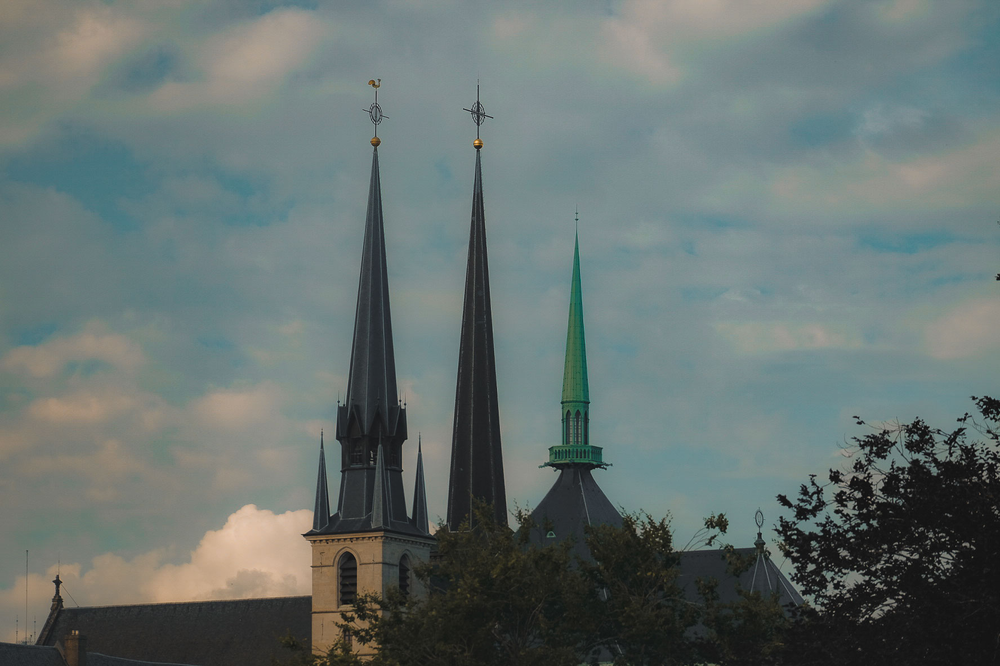
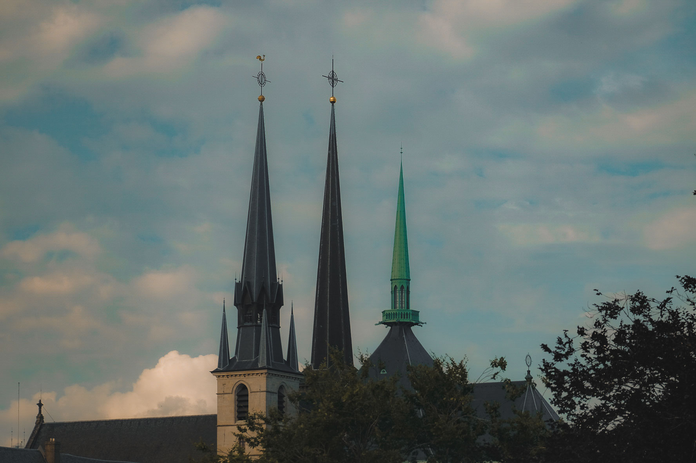

I was in luxembourg only for the evening of day 1 so there are not many photos however I have shots of most of the major landmarks such as the Bourbon-Platte , Pétrusse Casemates and Pont Adolph these are the photos which were taken on my Fujifilm xt-1 and a 50-230mm F4.5 lens


 
